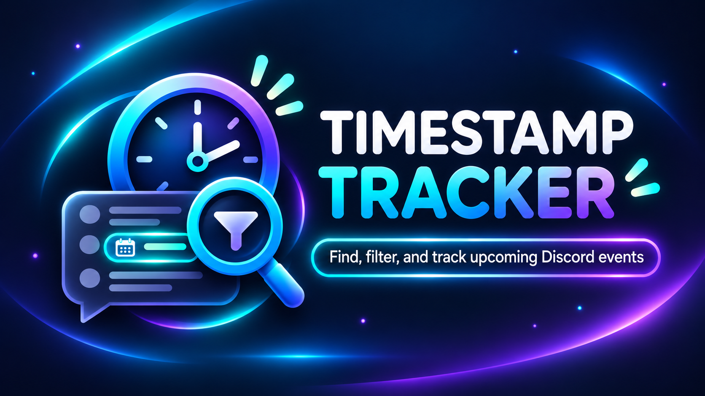

01 / FIND
Search by time
Choose a time window, keyword or author type to narrow down native Discord timestamps.
Search upcoming events in your Discord channel, preview the original messages, and jump straight to what matters.

Choose a time window, keyword or author type to narrow down native Discord timestamps.
See titles, descriptions, original images and local start times, sorted chronologically.
Search results are private to the requester, with navigation and a dismiss button.
/upcoming hours:2
Find events in the next two hours. Optional keyword, mode, source and image toggle.
/today zone:Australia/Melbourne
Find remaining events today. Calendar searches default to UTC.
/tomorrow zone:Australia/Melbourne
Find tomorrow's events in the selected timezone.
/testtimestamp
Post a labelled sample event with an optional image. Server managers only.
/help
View available commands, search limits and official community resources.
/invite
View early access application instructions and installation requirements. Public installation is not yet open.
/about
View version, data-handling information and official support resources.
Connect with the Timestamp Tracker community and help shape the future of event discovery on Discord.
Find helpful guides, ask questions and get help with Timestamp Tracker.
Report bugs, suggest new features and share your feedback.
Register your interest in testing Timestamp Tracker before public release.
Release notes and improvements to Timestamp Tracker.
This update introduces our official community infrastructure and improved support resources while retaining existing event discovery functionality.
All seven commands retained. 33 offline checks and eight update checks completed.
Improved recognition of event-start labels with emoji and validation of image URLs. 28 offline checks passed.
Server managers approve the installation and grant access only to intended channels. Members and the bot both need View Channel and Read Message History. Search covers up to 500 recent messages in the current server text channel, not all channels or all history. Native Discord timestamp tags are supported; plain-text dates are not. Threads and direct messages are not supported.